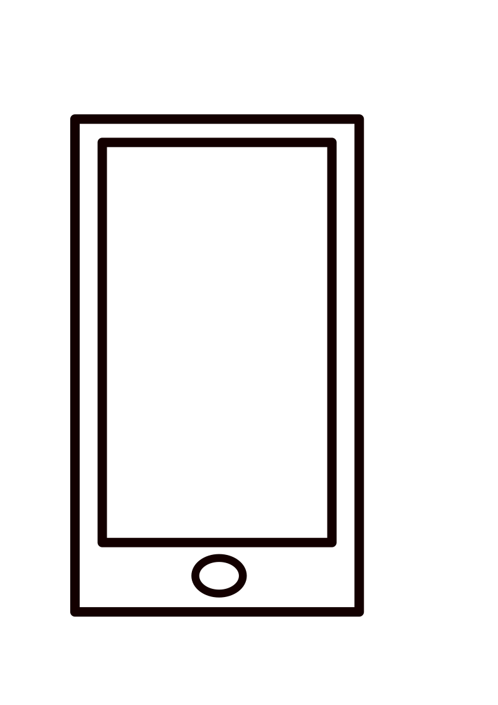

Ma lettre de motivation
(+687) 85 76 74
Objet : Demande de contrat d'alternance
Madame, Monsieur,
Je me nomme Uedre Vivian, actuellement en phase préparatoire dans le cadre de la formation de Développeur Web et Web Mobile, j'aimerais effectuer mon alternance dans votre entreprise.
En effet, votre secteur d'action est vaste et divers. Il m'intéresse et me permettrait d'élargir le panel de mes compétences. L'aspect sécuritaire est pour moi primordial, la cybersécurité est un pilier de nos jours pour la réalisation de sites et applications web.
Ainsi, je souhaite avoir l'opportunité d’enrichir mon expérience professionnelle au sein de votre entreprise par le biais de l'alternance afin d'y réaliser mon projet professionnel.
J’aime travailler efficacement et proprement, je suis à l’écoute des personnes avec lesquelles je suis amené à oeuvrer, et j’apprécie le travail en équipe.
J’espère vivement que ma candidature saura retenir votre attention et reste à votre disposition pour un entretien.
Veuillez agréer, Madame, Monsieur, l’expression de mes respectueuses et sincères salutations.
UEDRE Vivian.